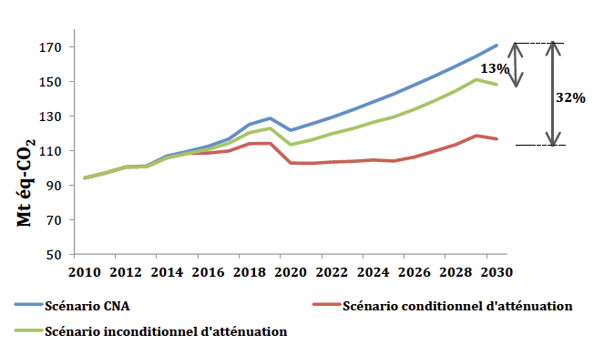

La Contribution Prévue Déterminée au niveau National (CPDN) du Maroc, trouve son ancrage institutionnel dans la Stratégie Nationale de Développement Durable (SNDD). Le Maroc a élaboré sa Contribution avec la conviction que les ambitions mondiales pour contrer les effets du changement climatique appellent à un engagement conséquent de toutes les parties tant en matière d’atténuation, d’adaptation que de moyens de mise en œuvre.
Pour l’élaboration de sa Contribution, le Maroc a mené un large processus de concertation avec les parties prenantes. Ce processus a permis de passer en revue les politiques et programmes mis en place par le Maroc pour lutter contre le réchauffement climatique et de définir le niveau d’ambition que le pays souhaite adopter dans le cadre de sa Contribution.
Ce processus a été couronné par la tenue, le 2 juin 2015 à Rabat, d’une conférence nationale, présidée par le chef du Gouvernement, pour présenter officiellement le projet de Contribution du Maroc à l’ensemble des parties prenantes de la société marocaine afin de s’assurer de leur adhésion dans la mise en œuvre des engagements formulés dans le présent document.
Bien que le Maroc concentre ses efforts dans le secteur de l’énergie, ses objectifs de réduction de gaz à effet de serre (GES) seront réalisés grâce à des mesures prises dans tous les secteurs de l’économie, s’appuyant sur des stratégies et des plans d’action sectoriels touchant notamment les domaines de l’agriculture, de l’eau, des déchets, des forêts, de l’énergie, de l’industrie et de l’habitat.
L’engagement du Maroc est de réduire ses émissions de GES en 2030 de 32 % par rapport aux émissions projetées pour la même année selon un scénario « cours normal des affaires ». Cet engagement ne sera atteint qu’à condition que le Maroc ait accès à de nouvelles sources de financement et un appui additionnel par rapport à celui reçu au cours des dernières années, dans le cadre d’un nouvel accord contraignant sous l’égide de la CCNUCC. Cet objectif correspond à une réduction cumulée de 401 Mt éq-‐CO2 sur la période 2020-‐2030. L’effort que le Maroc devra consentir pour atteindre cette ambition nécessite un investissement global de l’ordre de 45 milliards de dollars américains, dont 35 milliards sont conditionnés par un appui international grâce aux nouveaux mécanismes de la finance climat, dont le Fonds Vert pour Climat.
En matière d’adaptation, le Maroc a déployé des efforts importants. Historiquement, sur la période 2005-‐2010, le Royaume a consacré 64 % des dépenses climatiques du pays à l’adaptation, ce qui équivaut à 9 % des dépenses globales d’investissement.
La part considérable du budget national d’investissement dédié à l’adaptation démontre l’ampleur des enjeux pour la société marocaine. Cet effort est nécessairement appelé à augmenter dans les années et décennies à venir. Une extrapolation permet d’entrevoir un accroissement de l’investissement national en matière d’adaptation pour atteindre au moins 15 % à l’horizon 2030.
En conclusion, le Maroc, mû par ses convictions de responsabilité collective, mais différenciée, par sa croyance à une destinée commune de toute l’humanité, par son attachement au principe de l’équité, veut tracer la voie d’un engagement global, responsable et juste pour le bien de l’ensemble de notre planète.
Situé sur la rive sud de la Méditerranée, et à la fois aux portes de l’Europe et au nord du continent africain, le Maroc est depuis toujours un carrefour de civilisations. Au cours des dernières décennies, le Maroc a connu un développement économique et démographique dans un contexte de changement climatique. La pression sur les ressources naturelles s’est accentuée en conséquence, affectant la résilience des écosystèmes forestiers et du secteur agricole, notamment en raison de la raréfaction des ressources en eau dont la disponibilité par habitant était plus de trois fois plus importante en 1960 qu’aujourd’hui.
Conscient de cette situation, le Maroc s’est engagé dans une démarche volontaire et sérieuse de lutte contre le réchauffement climatique, en dessinant progressivement les contours de sa propre vision tout en se conformant aux décisions prises collectivement à l’échelle internationale. La vision du Maroc en matière de changement climatique se décline comme suit :
Rendre son territoire et sa civilisation plus résiliente face au changement climatique tout en assurant une transition rapide vers une économie sobre en carbone.
Cette volonté politique trouve aujourd’hui sa place dans la Loi-‐cadre portant Charte Nationale de l’Environnement et du Développement Durable qui précise « les droits et devoirs inhérents à l’environnement et au développement durable reconnus aux personnes physiques et morales et proclame les principes qui devront être respectés par l’État, les collectivités territoriales et les établissements et entreprises publics ». L’opérationnalisation de cette charte a été entreprise à travers l’élaboration de la Stratégie Nationale du Développement Durable (SNDD) qui sera à même de guider les actions de toutes les institutions publiques et des acteurs privés visant la réalisation d’un développement économique et social dynamique.
La Contribution du Maroc trouve son ancrage institutionnel dans la SNDD et permet d’esquisser une vision du Maroc à l’horizon 2030. Le Maroc a élaboré sa Contribution avec la conviction que les ambitions globales pour contrer les effets du changement climatique appellent à un engagement conséquent de toutes les parties tant en matière d’atténuation, d’adaptation que de moyens de mise en œuvre.
Dans cette optique, le Maroc s’est fixé un objectif de limitation de la croissance des gaz à effet de serre (GES) qu’il atteindra grâce à ses propres moyens, et dont l’ambition pourra être rehaussée de façon substantielle avec un appui de la communauté internationale. Cette ambition repose, dans une large mesure, sur une importante transformation du secteur de l’énergie, qui nécessite la plus grande détermination politique et qui vise à réduire la grande dépendance énergétique du pays et à répondre à la demande grandissante en énergie pour soutenir son développement, notamment en raison du stress hydrique croissant. Les principaux objectifs qui sous-‐tendent cette transformation sont les suivants :
Bien que le Maroc concentre ses efforts dans le secteur de l’énergie, ses objectifs de réduction de GES seront réalisés grâce à des mesures prises dans tous les secteurs de l’économie, s’appuyant sur des stratégies et des plans d’action sectoriels touchant notamment les domaines de l’agriculture, de l’eau, des déchets, des forêts, de l’énergie, de l’industrie et de l’habitat.
Le Maroc compte également entamer incessamment, en collaboration avec la Coalition pour le Climat et l’Air pur, l'élaboration d'un plan national de lutte contre les polluants de courte durée. Ce processus impliquera de réaliser l’inventaire des émissions de ces polluants et d’évaluer les avantages de les réduire pour le climat, la santé et la production agricole.
La mise en œuvre de la Contribution nécessitera une mobilisation sans précédent des acteurs de la société marocaine et des partenaires financiers internationaux. Pour faciliter cette mobilisation, le Maroc vient de mettre sur pied le Centre de Compétences Changement Climatique du Maroc (4C Maroc), qui consiste en une plateforme de renforcement des compétences des différents acteurs et d’échange d’informations en matière de changement climatique, ouvert sur son environnement régional et africain. Le 4C Maroc sera le moteur de cette mobilisation et sera responsable du développement d’un système national d’inventaire des émissions de GES.
Dans ce contexte, et à titre de futur Président de la Conférence des Parties à la CCNUCC (2016), le Maroc réitère sa détermination à soutenir le processus multilatéral de négociation d’un nouveau régime sur le climat cette année à Paris.
|
Objectif inconditionnel |
Une réduction de 13 % des émissions de GES en 2030 par rapport aux émissions projetées à la même année selon le scénario « cours normal des affaires » (CNA).* |
|
Objectif conditionnel |
Une réduction additionnelle de 19 % réalisable à certaines conditions, ce qui porterait à 32 % la réduction totale des émissions de GES en 2030 par rapport aux émissions projetées à la même année selon le scénario CNA.* |
|
Trajectoires escomptées |
À titre indicatif et seulement pour des fins de planification, le Maroc prévoit que les trajectoires des émissions pour réaliser les objectifs inconditionnels et conditionnels seront respectivement :
|
|
Besoins financiers et conditions |
L’atteinte de l’objectif conditionnel nécessite un investissement global estimé à 45 milliards de dollars américains entre 2015 et 2030, dont 35 milliards sont conditionnés à :
|
*Le Maroc se réserve la possibilité de réviser le scénario CNA, sur la base de nouvelles analyses, d’ici 2020.
Figure 1. Le scénario CNA et les scénarios d’atténuation

|
Type d’objectif |
Réduction des émissions par rapport aux émissions projetées pour l’année 2030, selon un scénario CNA. |
|
Couverture |
Économie dans son ensemble |
|
Gaz couverts |
|
|
Secteurs couverts |
Énergie
Procédés industriels
Agriculture
Déchets
Utilisation des terres, leur changement et la forêt (UTCF)
|
|
Scénario « cours normal des affaires » (CNA) |
Projection des émissions de GES à l’horizon 2030, commençant en 2010, première année de mise en œuvre du Plan National de Lutte contre le Réchauffement Climatique. La projection ne prend donc pas en compte les mesures et les actions d’atténuation adoptées à partir de 2010. |
|
Scénarios d’atténuation |
Projections des émissions des GES à l’horizon 2030, commençant en 2010. Le scénario d’atténuation inconditionnel repose sur la mise en œuvre de 10 projets, alors que le scénario conditionnel pose l’hypothèse de la mise en œuvre de 54 projets sur la période 2010-‐2030. |
|
Potentiel de réchauffement global (PRG) |
Les valeurs de PRG utilisées sont celles déterminées par le Groupe Intergouvernemental des Experts sur le Climat (GIEC), selon la Décision 17/CP.8 de la CCNUCC, pour la préparation des inventaires nationaux d’émissions :
|
|
Méthodologies pour l’estimation des émissions |
L’inventaire des émissions de GES de 2010 a été réalisé suivant les lignes directrices révisées du GIEC de 1996. Les scénarios CNA et d’atténuation ont été élaborés à l’aide du logiciel « Long-‐range Energy Alternatives Planning System » (LEAP) pour tous les secteurs. Ils sont basés sur les données de l’Annuaire des Statistiques Nationales, des données sur les activités sectorielles et des analyses prospectives économiques, démographiques et sectorielles. |
|
Méthodologies pour l’estimation des émissions des secteurs agricole, forestier et d’autres types d’utilisation des terres |
Secteur agricole : les émissions des GES considérées sont celles liées à la fermentation entérique et la gestion du fumier, aux systèmes de culture et aux terres agricoles (sols cultivés). Les résidus agricoles sont principalement utilisés comme aliments pour le bétail ou comme combustible en milieu rural. Secteur forestier et autres types d’utilisation des terres : en tenant compte des spécificités locales et du type d’usage des sols au Maroc, les forêts naturelles, le reboisement, l’arboriculture, le bois de feu de la forêt, le bois de feu des vergers et les incendies de forêt sont les plus importantes catégories considérées pour l’évaluation des émissions du secteur de la foresterie et d’autres types d’utilisation des terres. |
Tableau 1. Résumé des données clés concernant l’atténuation
|
2010 |
2020 |
2025 |
2030 |
Cumul 2020-‐2030 |
|
|
Émissions – CNA (Mt éq-‐CO2) |
94 |
122 |
143 |
171 |
1 585 |
|
Émissions – Scénario inconditionnel (Mt éq-‐CO2) |
94 |
113 |
129 |
148 |
1 443 |
|
Émissions – Scénario conditionnel (Mt éq-‐CO2) |
94 |
103 |
104 |
117 |
1 184 |
|
Réductions escomptées – Scénario inconditionnel (Mt éq-‐CO2) |
0 |
9 |
14 |
23 |
142 |
|
Réductions escomptées – Scénario conditionnel (Mt éq-‐CO2) |
0 |
19 |
39 |
54 |
401 |
Au cours des dernières années, le Maroc a profondément réformé son cadre juridique et institutionnel de façon à permettre la transition vers une économie verte. La mise en œuvre de la Contribution du Maroc s’appuie sur plusieurs lois, stratégies et plans d’action nationaux, reposant sur des objectifs sectoriels précis et ambitieux (Tableau 2).
Le scénario d’atténuation menant à l’objectif conditionnel repose sur une estimation des réductions des GES escomptées de 54 projets couvrant l’ensemble des secteurs, comme l’illustre la Figure 2.
Tableau 2. Principales stratégies sectorielles et leurs objectifs permettant la mise en œuvre de la Contribution
|
Stratégies et plans d’action |
Objectifs |
|
Stratégie Nationale Énergétique |
|
|
Programme National de Valorisation des Déchets |
|
|
Programme National d’Assainissement Liquide et d’Épuration des Eaux Usées (PNA) |
|
|
Plan Maroc Vert |
|
|
Stratégie de Préservation et de Gestion Durable de la Forêt |
|
Figure 2. Répartition de l’effort d’atténuation attendu de chaque secteur, sur la période 2020-‐2030, pour atteindre l’objectif conditionnel
|
Perspective sur les droits de la personne et le genre |
Le respect des droits de la personne et l’équilibre homme -‐ femme sont deux piliers de la vision du Maroc concernant son action en matière de changement climatique. La Constitution du Maroc de 2011 a apporté une nouvelle impulsion à cette dynamique en consacrant le développement durable en tant que droit pour tous les citoyens. |
|
Considérations liées aux deux autres Conventions de Rio |
La Contribution du Maroc s’inscrit dans une perspective intégrée visant la restauration, le respect et le maintien de la diversité biologique, la gestion intégrée des ressources en eaux ainsi que la gestion durable des terres permettant de contrer la désertification sur son territoire. |
|
Utilisation des mécanismes de marché |
Le Maroc considère comme étant primordiale la mise en place d’un mécanisme de marché international, de façon à réduire les coûts totaux pour atteindre l’objectif de limitation de la hausse des températures à 2°C. Le Maroc n’exclut pas la possibilité d’avoir recours à ces mécanismes pour atteindre ses objectifs conditionnels et/ou inconditionnels. |
|
Équité et ambition |
Le Maroc considère que sa Contribution est ambitieuse et équitable pour trois principales raisons :
|
Le Maroc est soumis, en raison de sa position géographique, à une grande vulnérabilité naturelle au changement climatique : rareté et raréfaction des ressources en eau, baisse de la production agricole, désertification, inondations et rehaussement du niveau de la mer. Pour le Maroc, l’adaptation aux variations et au changement climatique constitue la pierre angulaire de tout programme ou politique de développement durable.
La vision du Maroc est de :
Préserver son territoire et sa civilisation de la manière la plus appropriée, en réagissant efficacement aux vulnérabilités de son territoire et en anticipant une politique d’adaptation qui prépare l’ensemble de sa population et de ses acteurs économiques à faire face à ces vulnérabilités.
Le Maroc met en œuvre une approche sectorielle, adaptée aux circonstances des entités territoriales: les zones de montagne, le littoral, les oasis, les zones agricoles et les zones urbaines. Les objectifs finaux du Maroc face au changement du climat, qui doivent également trouver un écho auprès de la communauté internationale, se traduisent concrètement par :
La vision du Maroc en matière d’adaptation se décline en plusieurs objectifs sectoriels chiffrés pour les horizons 2020 et 2030.
Les objectifs à l’horizon 2020 :
Les objectifs à l’horizon 2030 :
Pour atteindre ces objectifs, un grand travail de planification a d’ores et déjà été entrepris. La résilience face au changement climatique est ainsi inscrite dans la majorité des stratégies, des politiques, des plans d’action et des programmes, dont voici quelques exemples :
De plus, le Maroc s’engage à élaborer, à brève échéance, son Plan National d’Adaptation au changement climatique à l’horizon 2030, afin de mieux coordonner ses actions et de maximiser leurs retombées.
Les besoins en matière d’adaptation auront des implications budgétaires importantes pour le Maroc. Historiquement, sur la période 2005-‐2010, le Maroc a consacré 64 % de ses dépenses climatiques à l’adaptation, ce qui équivaut à 9 % des dépenses globales d’investissement.1
La part considérable du budget national d’investissement dédié à l’adaptation démontre l’ampleur des enjeux pour la société marocaine. Cet effort est nécessairement appelé à augmenter dans les années et décennies à venir. Une extrapolation permet d’entrevoir un accroissement de l’investissement national en matière d’adaptation pour atteindre au moins 15 % à l’horizon 2030.
De façon plus spécifique, et à titre d’exemple, le Plan d’Investissement Vert présente des initiatives prévues à court terme pour atteindre les objectifs escomptés dans les secteurs de l’eau, l’agriculture et la forêt, dont les besoins d’investissements ont été évalués à 2,5 milliards de dollars américains.2
Dans ce contexte, le Maroc sollicite l’appui de la communauté internationale, qui n’a consacré que 5% du financement climatique à l’adaptation.3 Au-‐delà d’un appui financier, le Maroc compte également pouvoir bénéficier d’un appui en matière de renforcement de capacités techniques et institutionnelles, notamment en ce qui concerne la création de données et le partage des connaissances, ainsi que les aspects juridique, financier et d’ingénierie pour la conception et la mise en œuvre de projets aux échelles régional et local, leur suivi et l’évaluation de leurs impacts socioéconomiques.
Le Maroc a développé un système de suivi-‐évaluation de la vulnérabilité et de l’adaptation au changement climatique visant à doter ses régions d’un dispositif institutionnel permettant d’assurer le suivi de la vulnérabilité climatique et les résultats de l’action en matière d’adaptation en tenant compte de l’aspect genre. Ce projet pilote a d’abord été testé dans les régions de Souss-‐Massa-‐Drâa et Marrakech Tensift Al Haouz4. L’adoption par les autres régions du pays de ce système de suivi et d’évaluation est prévue pour le moyen terme avec en perspective la mise en œuvre d’un mécanisme national de gouvernance du système de suivi et d’évaluation de l’adaptation au changement climatique.
Le projet de régionalisation avancée que le Maroc a lancé apportera une contribution significative à ce programme dans le cadre d’une vision d’aménagement du territoire national basée sur la valorisation des potentialités et des ressources propres à chaque région et préconisant la démarche de planification stratégique territoriale intégrée et participative pour des territoires résilients au changement climatique.
1. Source : Banque Mondiale (2013). Royaume du Maroc. Revue des Dépenses Publiques et Analyse Institutionnelle de la Politique Climat. Programme d’Appui Analytique à la Stratégie Changement Climatique du Maroc. P-‐ESW 113768. Note de Stratégie n. 4.1.↩
2. Source : Royaume du Maroc (2014). Plan d’investissement vert (PIV), 2014. Disponible à : http://www.maroc.ma/fr/content/plan-‐maroc-‐vert ↩
3. Source : Climate Funds Update (2015). Multilateral and Bilateral Project Data. Disponible à : http://www.climatefundsupdate.org/data ↩
4. Voir : GIZ, OREDD (2014). Guide relatif au montage du Système de Suivi-‐Évaluation de la Vulnérabilité et de l’Adaptation au Changement Climatique dans les Régions du Souss-‐Massa-‐Drâa et Marrakech Tensift Al Haouz.↩